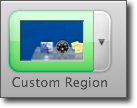
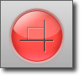
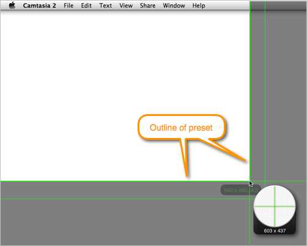
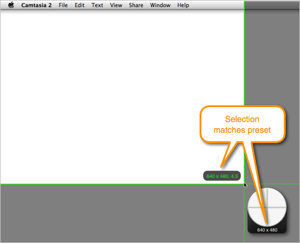
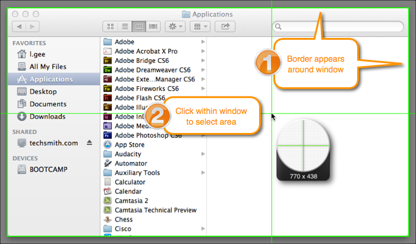
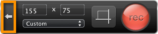

Record a custom region:
- Open Camtasia or choose File > New Recording.
- Select the audio and camera options:
- Camera video:
Click to enable camera video. From the Camera menu, select the camera device, such as the built-in camera. A preview of the camera appears.

- Microphone audio:
Microphone audio is recorded by default. From the Audio menu, select the microphone.

- System audio:
Click to enable system audio recording. System audio is the sound from your computer including mouse-click sounds, audio from your speakers, etc.

If the TechSmith Audio Capture Component is not installed, click the Need System Audio help button to install it.
- Select Custom Region from the Screen menu.

- Click the Select Area button to select the area to record. Crosshairs appear.

- To select an area, click and drag on the screen. As you drag the cursor near a preset, an outline of the preset appears.

To select the preset, continue to drag the cursor until the label highlights and the border matches the guide.

- To select a window, move the cursor over the window until a green border appears around the window. Click within the window to select that area.

You cannot access any applications or system settings while in the selection mode. Make sure to edit the audio settings, application or window position, and other system settings before selecting the area to record. Click the Cancel Selection button or press Esc to edit these items.

- Click the Record button or press Command-Shift-2 to start recording.

- Press Command-Shift-2 to pause the recording or Command-Option-2 to stop the recording.
Camtasia adds the recording file (.trec or .cmrec) into the Media tab in the Assets and onto the timeline. On the canvas, region recordings appear at their original size (the recording dimensions).
 Record a custom region
Record a custom region